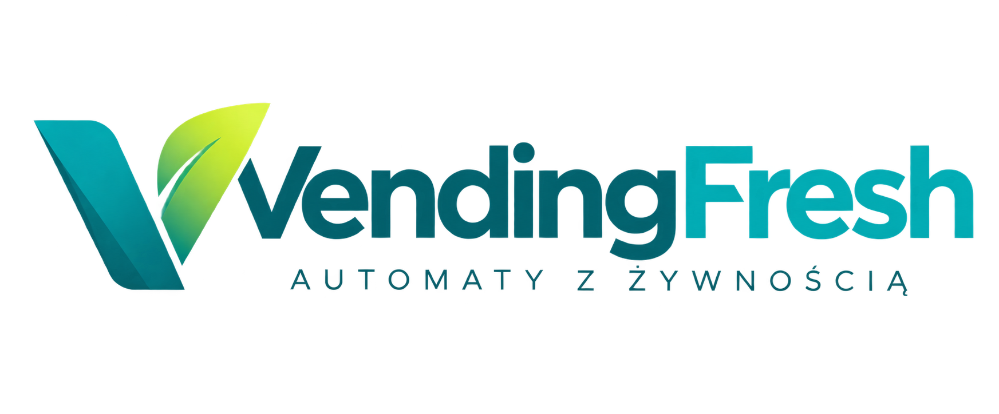
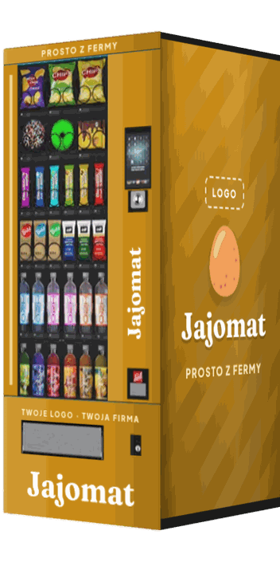
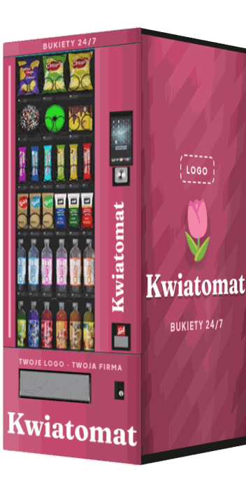
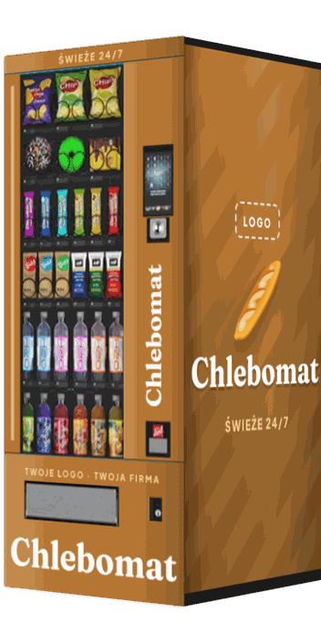
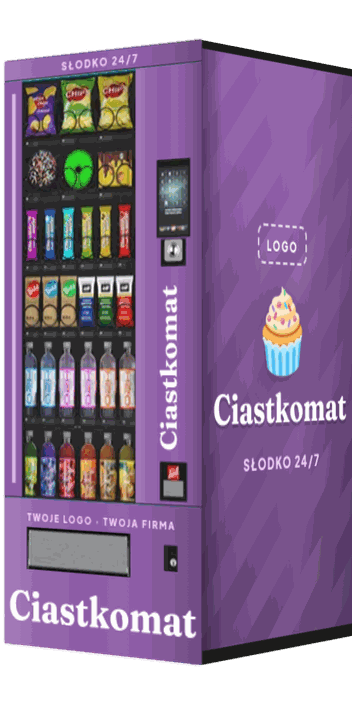
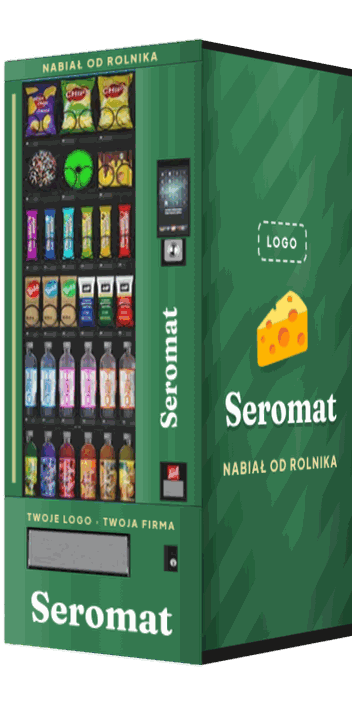
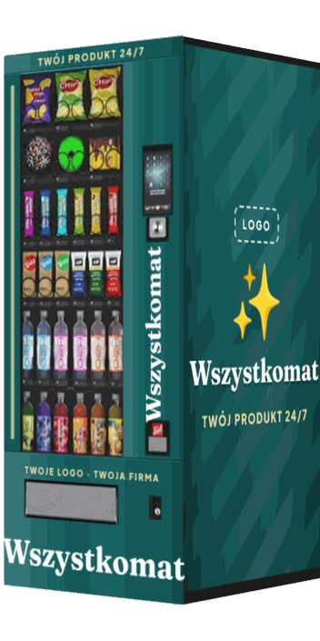
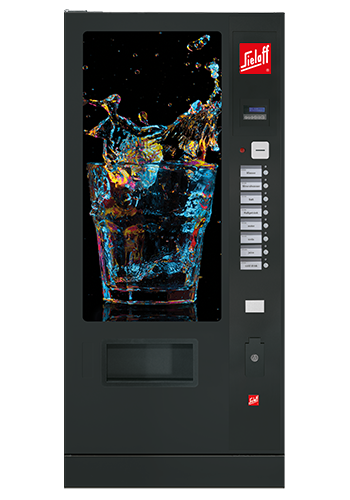
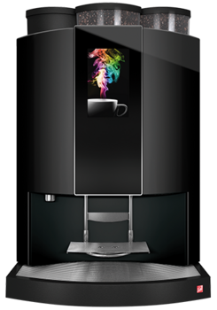
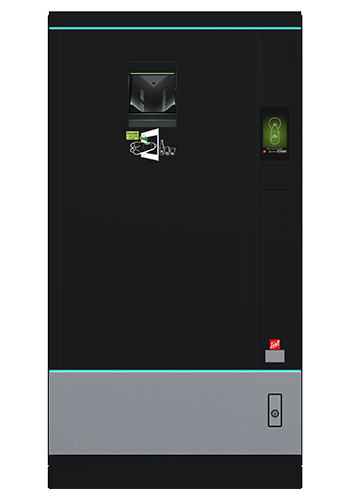

Automaty sprzedażowe na wymiar · partner Sielaff
Automat, który z daleka mówi, co sprzedajesz.
Chlebomat, kwiatomat, ciastkomat, seromat — albo wszystkomat. Dopasowujemy rozmiar, komory, temperatury i okleinę z Twoim logo. Kupisz albo wynajmiesz.





Katalog 2026 · oferta i modele →
tel. +48 735 115 427
kontakt@vendingfresh.pl · vendingfresh.pl
Katalog 2026
Kim jesteśmy
Masz dobry produkt. Brakuje Ci tylko czasu, żeby go sprzedawać.
VendingFresh to marka Sklep za Stodołą Sp. z o.o. z Katowic. Projektujemy, dostarczamy i serwisujemy automaty sprzedażowe — nie z półki, tylko skonfigurowane pod konkretny produkt i miejsce. Jesteśmy partnerem Sielaff, a w linii Smart oferujemy automaty Westvend w korzystniejszej cenie.
🕕Sklep zamyka się o 18
Klient, który wraca z pracy o 19, i tak nie kupi Twojego produktu. Automat sprzedaje 24/7.
⛺Targ to cały dzień stania
Rozładunek, stoisko, sprzedaż, pakowanie — a trafiasz tylko do tych, którzy przyjdą akurat w sobotę.
💸Pracownik za ladą kosztuje
Nawet gdy nikt nie przychodzi, pensja i tak leci. Automat nie bierze urlopu.
Co nas wyróżnia
📐Automat na wymiar
Rozmiar, liczba i wielkość komór, temperatury, sposób wydawania — wszystko pod Twój produkt, nie odwrotnie.
🎨Okleina z Twoim logo
Pełna okleina w Twoich barwach, duże napisy i ekran z logo. Projekt i wykonanie po naszej stronie.
🔑Kupisz albo wynajmiesz
Zakup za gotówkę, w leasingu albo z dotacją ARiMR — albo wynajem ze stałą opłatą miesięczną.
🛠️Opieka po starcie
Dostawa, montaż, szkolenie, serwis i telemetria — w całej Polsce.
Dosłownie wszystko się da. Pieczywo, jajka, sery, kwiaty, ciastka, dania gotowe, karma dla zwierząt czy akcesoria wędkarskie — jeśli masz produkt, dobierzemy do niego automat.
VendingFresh — marka Sklep za Stodołą Sp. z o.o.str. 2
Katalog 2026
Oferta
Kup, wynajmij albo zostaw to nam.
Trzy modele współpracy. Automat na wymiar — z okleiną i komorami pod Twój produkt — kupisz albo wynajmiesz. Szkołom, biurom i zakładom stawiamy gotowy automat w pełnej obsłudze.
🔑 Zakupdla producentów i sklepów
Automat na własność, skonfigurowany i oklejony pod Twój produkt. Gotówka, leasing albo dotacja ARiMR.
Uzupełniasz sam, zarobek w całości Twój. Montaż, szkolenie i serwis po naszej stronie.
📅 Wynajembez kupowania automatu
Wypożyczasz od nas automat dopasowany pod Twój produkt i płacisz stałą opłatę co miesiąc.
Uzupełniasz go swoimi produktami, a zarobek ze sprzedaży zostaje u Ciebie.
🙌 Pełna obsługaszkoły, biura, zakłady
Stawiamy gotowy automat z naszym asortymentem. Ty wybierasz produkty i częstotliwość uzupełniania.
My uzupełniamy i serwisujemy. Bez kosztów przy odpowiednim ruchu, w mniejszych miejscach stała opłata.
Pełna obsługa to standardowy automat — bez indywidualnej konfiguracji i okleiny. Automat na wymiar (kwiatomat, chlebomat…) dostępny jest w zakupie i wynajmie.
Jak wygląda współpraca
Od pierwszej rozmowy do pierwszej sprzedaży.
1Rozmowa i konfigurator
Opowiadasz o produkcie i wypełniasz konfigurator. 5 minut, bez zobowiązań.
2Projekt i wycena
Projektujemy automat — rozmiar, komory, temperatury, okleinę — i wyceniamy w 24–48 h.
3Model współpracy
Zakup (gotówka, leasing, ARiMR), wynajem albo pełna obsługa gotowego automatu.
4Dostawa i montaż
Dowozimy gotowy, oklejony automat i montujemy go w wybranym miejscu.
5Szkolenie i start
Pokazujemy obsługę i uruchamiamy sprzedaż. W pełnej obsłudze nie musisz nic.
6Opieka po starcie
Serwis, telemetria i wsparcie — w całej Polsce.
Dwie linie automatów. Linia Smart (Westvend) — korzystniejsza cena na start. Linia Premium (Sielaff) — pełna gama, także outdoor i miejsca publiczne.
Nie wiesz, co wybrać? Zaznacz „doradźcie” w konfiguratorze na vendingfresh.pl/konfigurator — dobierzemy linię i model za Ciebie.
VendingFresh — marka Sklep za Stodołą Sp. z o.o.str. 3
Katalog 2026
Konfiguracja
Dopasowujemy dosłownie wszystko.
Każdy automat powstaje pod konkretny produkt i miejsce. Oto, co ustawiamy razem z Tobą.
📦 Produkt i opakowanie
Worek, słoik, butelka, pudełko, luzem albo Twoje własne opakowanie — dobieramy mechanizm pod konkretny format.
📏 Rozmiar automatu
Wielkość dobrana do miejsca i do tego, ile sprzedajesz.
🗄️ Komory na wymiar
Liczba i wielkość komór pod Twoje produkty — od małego ciastka po duży bukiet czy worek ziemniaków.
🌡️ Temperatury
Chłodzenie, temperatura pokojowa albo kilka stref temperatur w jednym automacie.
⚙️ Sposób wydawania
Spirala, popychacz albo winda — zależnie od kruchości i kształtu produktu.
📍 Miejsce
W budynku, pod wiatą czy na zewnątrz przy drodze — dobieramy obudowę i linię automatu.
💳 Płatności
Karta, BLIK, gotówka — konfiguracja pod Twoich klientów. Opcjonalnie weryfikacja wieku.
🎨 Oklejenie i branding
Pełna okleina w Twoich barwach, logo, duże napisy i ekran z logo — projekt i wykonanie po naszej stronie.
Z daleka widać, co sprzedajesz.
Zwykły automat to szara skrzynka. Twój ma wyglądać jak Twój sklep: z nazwą, logo i hasłem, które widać z drugiej strony ulicy. Duża naklejka na boku działa jak billboard.
Twoje logoTwoje barwyduże napisyekran z logoprojekt w cenie
Obok: poglądowa wizualizacja okleiny. Napis, logo, grafikę — przygotujemy dokładnie to, czego chcesz.

VendingFresh — marka Sklep za Stodołą Sp. z o.o.str. 4
Katalog 2026
Inspiracje
Chlebomat, kwiatomat, wszystkomat.
Tak może wyglądać Twój automat. Każdy z nich to ten sam sprawdzony automat — tylko z komorami, temperaturą i okleiną pod inny produkt.
Chlebomatświeże pieczywo 24/7
Kwiatomatbukiety i kwiaty cięte
Ciastkomatciasta, desery, słodycze
Jajomatjajka prosto z fermy
Seromatsery i nabiał od rolnika
WszystkomatTwój produkt 24/7
Wizualizacje poglądowe na zdjęciu automatu Sielaff. Wnętrze, komory i okleinę dobieramy indywidualnie.
VendingFresh — marka Sklep za Stodołą Sp. z o.o.str. 5
Katalog 2026 · Linia Smart
Linia Smart · Westvend
Automat na wymiar w korzystniejszej cenie.
Sprawdzone niemieckie automaty Westvend — mniejszy wybór modeli, za to niższa cena na start. Tak samo oklejamy je Twoim logo, a automat możesz kupić albo wynająć.
Do żywności i bio
Westvend WV Hybrid
Automat hybrydowy z windą towarową — produkty są wydawane delikatnie, tak żeby się nie uszkodziły. Duża pojemność i elastyczne wydawanie różnych formatów.
windajajka · pieczywo · nabiał · słoikizakup / wynajem
- Winda zamiast zrzucania produktu
- Także przekąski i napoje
- Opcjonalnie zamek bezpieczeństwa i alarm
- Do wnętrz i miejsc zadaszonych
- Okleina z Twoim logo
Cena katalogowa*7 249 €
Napoje i przekąski
Westvend WV 8
Automat spiralny na przekąski i napoje o zwiększonej pojemności. Bez windy — produkty spadają do odbioru, więc sprawdza się przy produktach, którym to nie szkodzi.
spiraleprzekąski · słodycze · PET · puszkinajniższy koszt wejścia
- Więcej miejsc na produkty — do lokalizacji z większym ruchem
- Do wnętrz i miejsc zadaszonych
- Okleina z Twoim logo, zakup albo wynajem
- Konfiguracja
- kolor obudowy, układ spiral, płatności, weryfikacja wieku, mocowanie do podłogi/ściany
- W cenie
- transport pod Twój adres i szkolenie z obsługi
Cena katalogowa*5 499 €
Ważne: automaty linii Smart są przeznaczone do wnętrz i miejsc zadaszonych — nie do stałej pracy na zewnątrz. Automat przy drodze albo bez dachu? Wybierz linię Premium w wersji outdoor. Specyfikację i dostępność potwierdzamy przy wycenie.
* Cena katalogowa producenta w konfiguracji podstawowej. Opcje dodatkowe (np. płatności, alarm, zamek) i VAT potwierdzamy w indywidualnej wycenie. Transport i szkolenie w cenie.
VendingFresh — marka Sklep za Stodołą Sp. z o.o.str. 6
Katalog 2026 · Linia Premium
Linia Premium · Sielaff
Pełna gama niemieckich automatów.
Jako partner Sielaff dobieramy model i konfigurację pod Twój produkt. Dwie strefy temperatur z monitoringiem FoodSafety, winda, wersje outdoor i antywandalowe.
Świeże produkty · najczęstszy wybór
SiLine Snack & Combi
Elastyczna konfiguracja wnętrza — dwie strefy temperatur w jednej maszynie, z przesuwalną granicą między nimi. Podstawowy wybór dla większości produktów świeżych.
2 strefy temperaturFoodSafetyopcja: winda
- Szerokość
- 780 lub 990 mm
- Strefy temperatur
- dwie, granica przesuwalna między półkami
- Bezpieczeństwo
- oprogramowanie FoodSafety monitoruje strefę świeżych produktów
- Opcje
- winda do delikatnych produktów — jajka, szkło, napoje gazowane
Cenana zapytanie
Na start
SN48
Kompaktowy automat spiralny: Snack, Combi, Fresh food lub 2T LM (dwustrefowy). Dobry na start albo do mniejszych lokalizacji.
5 lub 6 półek, 8 spiral w wielu rozmiarach
Cena: na zapytanie
Napoje i marki
SiLine GF
Duża szklana witryna z dobrą widocznością produktu — napoje i produkty markowe.
do 72 wyborów na 8 półkach · szkło/PET i puszki 0,2–0,6 l
Cena: na zapytanie
Co można skonfigurować w linii Premium
- Dwie strefy temperatur
- Winda do delikatnych produktów
- Spirale lub popychacze
- Blokowana klapa odbioru
- Ekran dotykowy z alergenami
- Telemetria i płatności
VendingFresh — marka Sklep za Stodołą Sp. z o.o.str. 7
Katalog 2026 · Linia Premium
Linia Premium · Sielaff
Na zewnątrz, w tłumie i z robotem.
Seria Outdoor (SiLine / SiVend)
Wzmocniona obudowa, ogrzewanie i chłodzenie do pracy na zewnątrz, bez zadaszenia. IP24, do −20 °C. Idealna przy drodze i przy gospodarstwie.

SiLine Public
Panel antywandalowy z poliwęglanu 12 mm i wzmocniona blokada — do miejsc publicznych o dużym ruchu.

Robimat X
Ramię robota zamiast spirali. Butelki i puszki 0,2–0,6 l, produkty 200–910 g. Wariant XM: ok. 315 napojów.

Seria FK
Klasyczny automat zsypowy na napoje 0,2–2,0 l — zsypy standardowe i wąskie w dowolnej kombinacji.

Siamonie · SiLine HG
Kawa, herbata, czekolada — do 250 kubków/h. Dobry duet z automatem na żywność.

SiOne
Kompaktowe zwroty opakowań: kody kreskowe do 10 000 pozycji, do 30 opakowań/min.
Smart czy Premium? Smart — niższa cena na start, dwa sprawdzone modele do wnętrz. Premium — pełna gama: dwie strefy z FoodSafety, outdoor (IP24, do −20 °C), wersje antywandalowe, kawa i zwroty opakowań. W obu liniach: okleina z Twoim logo, zakup albo wynajem. Ceny linii Premium — na zapytanie, przygotujemy je w wycenie 24–48 h.
VendingFresh — marka Sklep za Stodołą Sp. z o.o.str. 8
Katalog 2026 · Rozwiązania
Rozwiązania
Automat dopasowany do Twojego produktu.
Każdy produkt ma swoje wymagania — temperaturę, sposób wydawania, rytm sprzedaży. Tak podchodzimy do najczęstszych branż.
🥖Pieczywo
Codzienna rotacja, temperatura pokojowa, szczyty rano i wieczorem.
🥚Jajka
Delikatne wydawanie windą, wytłaczanki, oznakowanie zgodne z przepisami.
🧀Sery i nabiał
Chłodzenie, różne formaty, wyższa średnia wartość koszyka.
🥔Ziemniaki i warzywa
Duże, ciężkie opakowania — liczy się wolumen i wielkość komór.
🌿Bio i lokalne
Mini-sklep z wieloma produktami i opisami producentów na ekranie.
🍖Mięso i dania gotowe
Chłodzenie z kontrolą temperatury i telemetrią, rygor sanitarny.
🥤Napoje
SiLine GF, Robimat X, seria FK — z opcją zwrotów opakowań.
🌷Kwiaty
Wysokie komory na bukiety, chłodzenie, które przedłuża świeżość.
🧁Ciastka i słodycze
Chłodzone desery i ciasta w witrynie, która kusi z daleka.
✨
Twoja branża? Automat na wszystko.
Karma dla zwierząt, akcesoria wędkarskie, lody, kosmetyki — dopasujemy rozmiar, komory, temperatury i okleinę pod dowolny produkt.
Gdzie sprawdza się automat
- Przy gospodarstwie, piekarni, fermie
- Przy drodze i na osiedlu
- W szkole, biurze, zakładzie, szpitalu
Czego potrzebujesz
- Dostęp do prądu
- Dojazd dla serwisu
- Opakowanie zgodne z wymogami sanitarnymi
VendingFresh — marka Sklep za Stodołą Sp. z o.o.str. 9
Katalog 2026 · Opłacalność
Opłacalność
Ile może zarobić Twój automat?
Cztery przykłady z kalkulatora na vendingfresh.pl — przy zakupie automatu. Przychód = transakcje × koszyk × 30 dni; zysk = przychód × marża − koszty miesięczne.
🥖 Piekarnia przy osiedlu
40 transakcji dziennie · koszyk 12 zł · marża 35% · inwestycja 35 000 zł · koszty 400 zł/mies.
Przychód miesięczny14 400 zł
Zysk po kosztach4 640 zł / mies.
Zwrot inwestycjiok. 7,5 mies.
🥚 Ferma jaj przy drodze
20 transakcji dziennie · koszyk 15 zł · marża 40% · inwestycja 30 000 zł · koszty 250 zł/mies.
Przychód miesięczny9 000 zł
Zysk po kosztach3 350 zł / mies.
Zwrot inwestycjiok. 9 mies.
🧀 Serowarnia rzemieślnicza
15 transakcji dziennie · koszyk 25 zł · marża 45% · inwestycja 40 000 zł · koszty 350 zł/mies.
Przychód miesięczny11 250 zł
Zysk po kosztach4 712 zł / mies.
Zwrot inwestycjiok. 8,5 mies.
🌿 Sklep bio 24/7
60 transakcji dziennie · koszyk 20 zł · marża 30% · inwestycja 60 000 zł · koszty 700 zł/mies.
Przychód miesięczny36 000 zł
Zysk po kosztach10 100 zł / mies.
Zwrot inwestycjiok. 6 mies.
Model poglądowy, nie gwarancja wyniku. Wynik zależy od cen, kosztów i ruchu klientów w Twojej lokalizacji. Kwoty inwestycji w przykładach są umowne — realną wycenę Twojej konfiguracji przygotujemy w 24–48 h.
Czy to ma sens u Ciebie?
- Masz produkt, po który klienci wracają regularnie — jakikolwiek, automat dopasujemy
- Możesz zapewnić regularne dostawy i uzupełnianie
- Masz miejsce z ruchem albo cel podróży klientów
- Masz dostęp do prądu i dojazd dla serwisu
Szczerze: nie spełniasz połowy? Zadzwoń — powiemy wprost, czy to ma sens.
VendingFresh — marka Sklep za Stodołą Sp. z o.o.str. 10
Katalog 2026 · Dla firm i finansowanie
Pełna obsługa · szkoły, biura, zakłady
Automat w Twojej firmie i zero zachodu.
Uczniowie, pracownicy i goście mają przekąski, napoje czy dania pod ręką — a Ty nie musisz się niczym zajmować.
Ty decydujesz
- Jakie produkty z naszego asortymentu
- Jak często uzupełniamy — codziennie, kilka razy w tygodniu, raz w tygodniu
- Gdzie stoi automat
My robimy resztę
- Stawiamy automat — Ty nic nie kupujesz
- Uzupełniamy, serwisujemy, pilnujemy telemetrii
- W szkołach — asortyment zgodny z przepisami
Bez kosztów, jeśli na miejscu jest odpowiedni ruch — zarabiamy na sprzedaży.
Mniejsza firma? Stała opłata miesięczna, a uzupełnianie i serwis nadal po naszej stronie.
Pełna obsługa dotyczy standardowego automatu z naszym asortymentem — bez indywidualnej konfiguracji i okleiny.
Finansowanie
Kupujesz? Nie musisz płacić z własnej kieszeni.
📄Leasing
Rozkładasz inwestycję na miesięczne raty — domyślna ścieżka dla większości klientów.
🌾Dotacje ARiMR
Sprawdzamy, czy Twój projekt — głównie gospodarstwa rolne — kwalifikuje się do dofinansowania.
🔑Zakup
Klasyczny zakup urządzenia na własność, bez pośredników finansowych.
📅
Wolisz nie kupować? Wynajmij.
Automat dopasowany pod Twój produkt, z okleiną — za stałą opłatę miesięczną. Uzupełniasz sam, zarobek zostaje u Ciebie.
VendingFresh — marka Sklep za Stodołą Sp. z o.o.str. 11
Sześć powodów, żeby zacząć z nami.
01 · Na wymiarRozmiar, komory, temperatury i sposób wydawania pod Twój produkt.
02 · Twoja markaOkleina z logo i napisami — z daleka widać, co sprzedajesz.
03 · Dwie linieSmart w korzystniejszej cenie albo Premium Sielaff z pełną gamą.
04 · Elastyczny modelZakup, leasing, dotacja ARiMR, wynajem albo pełna obsługa dla firm.
05 · Szybka wycenaIndywidualna wycena w 24–48 h po wypełnieniu konfiguratora.
06 · OpiekaMontaż, szkolenie, serwis i telemetria w całej Polsce.
VendingFresh — marka Sklep za Stodołą Sp. z o.o., Katowice. Zdjęcia automatów: Sielaff, Westvend. Wizualizacje okleiny mają charakter poglądowy. Katalog nie stanowi oferty handlowej w rozumieniu Kodeksu cywilnego; ceny i specyfikację potwierdzamy w indywidualnej wycenie.